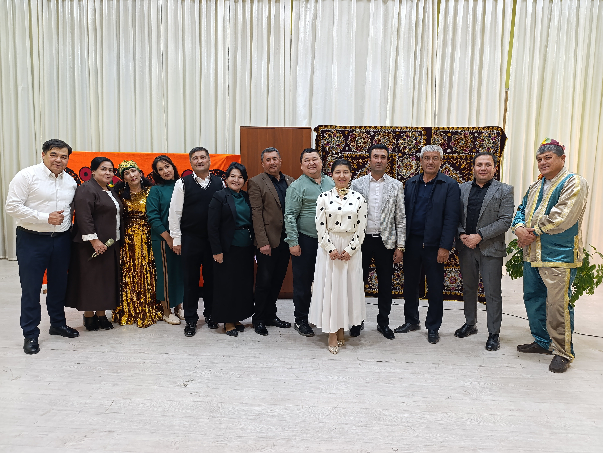
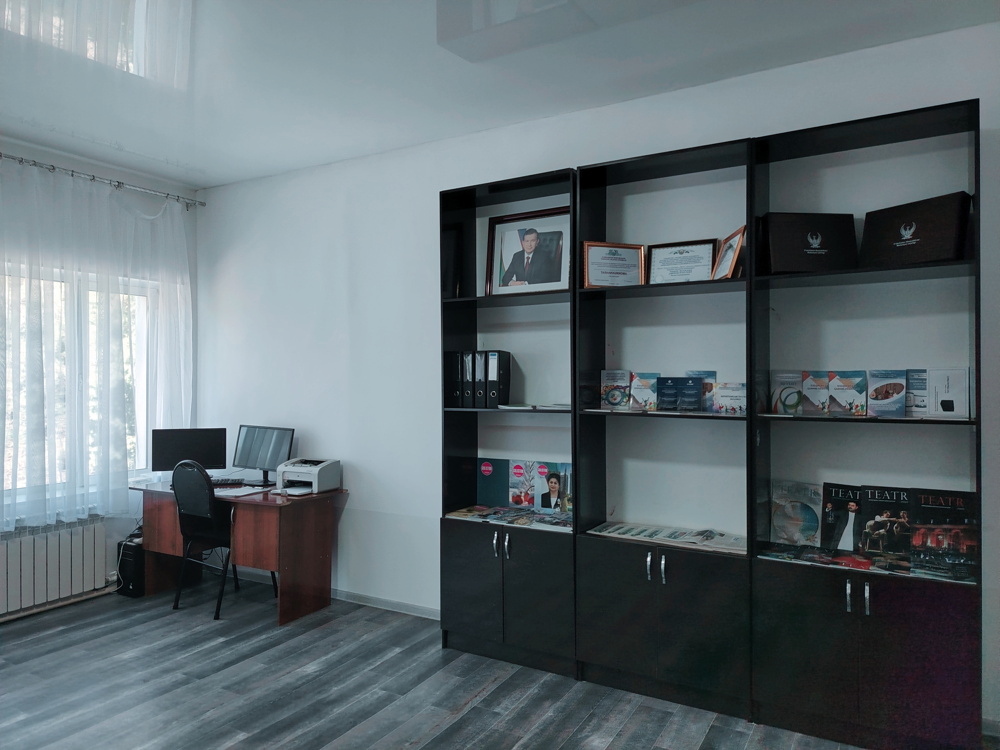

Ташкентское областное управление культуры, отдел культуры Юкоричирчикского района, 54-й культурный центр «Узбек-Казах» является учреждением, которое служит развитию дружбы, культуры, традиций и языков узбекского и казахского народов.
Он укрепляет культурные связи между двумя нациями через мероприятия, кружки и выставки.
В центре имеется зрительный зал на 225 мест, где проходят концерты и постановки.
Работают 12 сотрудников и 2 кружка: швейный и вокальный.


